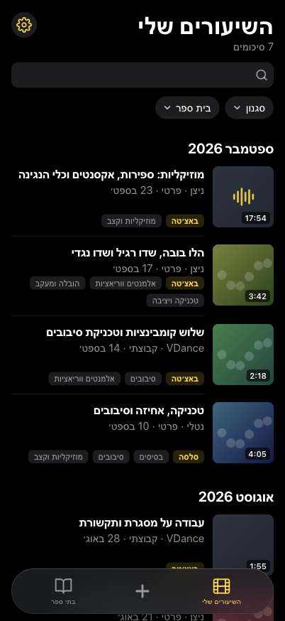
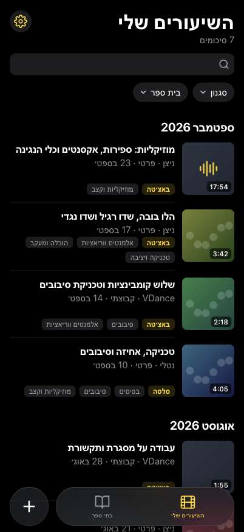

1 · הפלוס באפור של הטאבים הלא‑פעילים, כך שרק הטאב הנוכחי צהוב. 2 · סגנון iOS 26: הפלוס בעיגול זכוכית קטן משלו לצד הסרגל, כמו כפתור החיפוש באפליקציות של Apple.

1 · פלוס אפור בתוך הסרגל

2 · עיגול זכוכית נפרד (iOS 26)ההמלצה שלי1 · מצב בהיר